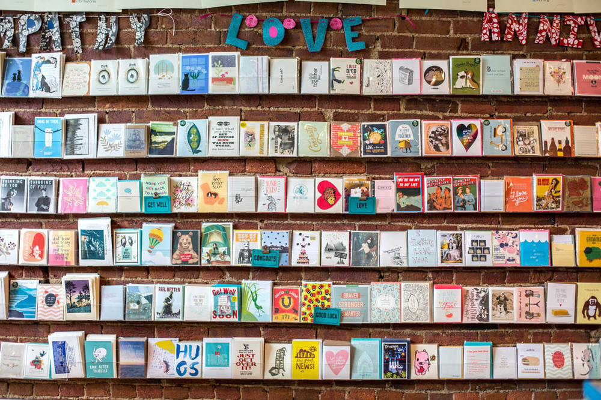
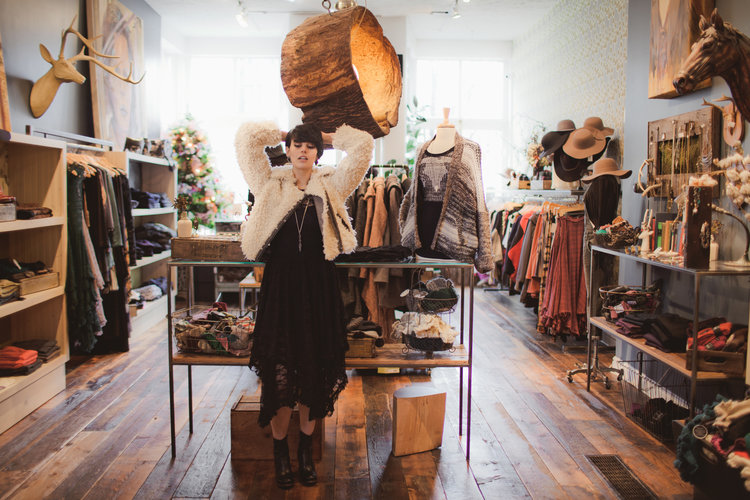
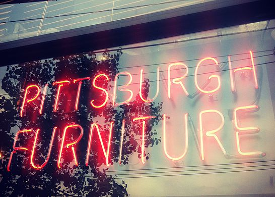

All pictures are from their attached site. This work is licensed under a Creative Commons Attribution-NonCommercial 4.0 International License.
 Wild Card a modern meets crafty gift shop with greeting cards, Pittsburgh apparel, and fabric. As I was looking around the store, I was planning out Christmas and birthday gifts. I found books, pins, candles and magnets that I wanted to buy on the spot. It is one of those stores that makes you wish you had more hobbies or had your own pin collection. My favorite thing was the wooden board with all the different areas of Pittsburgh etched in it. There is something for everyone. My mom, who is big on crafting and sewing, was going through the unique fabrics and the envelopes in different hues. I could have kept myself busy in the store for a couple more hours, but my mom insisted that we keep looking around.

Pavement An indie and ecologically friendly boutique where you can find a wide selection of cute dresses, shoes, and jewelry. All of the designs are hand-selected and most of them are made in America. The vibe is similar to Urban Outfitters or Anthropology, with name brands that can be found in Nordstroms. It feels very authentic and you can tell how much thought the owners put into it.

Pittsburgh Furniture this furniture store's objection is not only to sell furniture, but to preserve the forest and its consumers' wallets. Their website says their first goal is to "supply, recycle, redistribute, buy, and re-sell furniture of good quality and construct at a reasonable price". Since I am living off-campus this year for the first time, my mom and I did a lot of furniture shopping this summer. We have been to antique stores, barn sales, flea markets, but this was one of the coolest ones. It had a retro feel and three stories full of eye-catching pieces like funky end tables and adjustable mannequins.